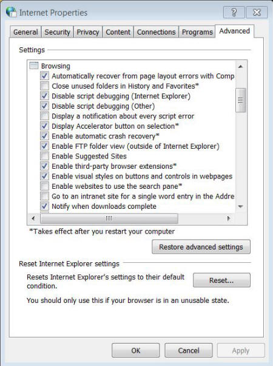
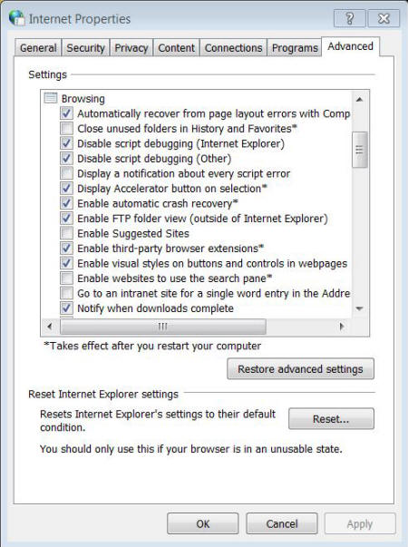
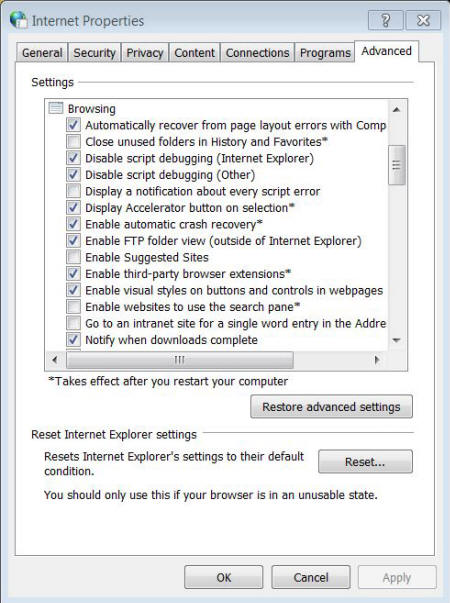
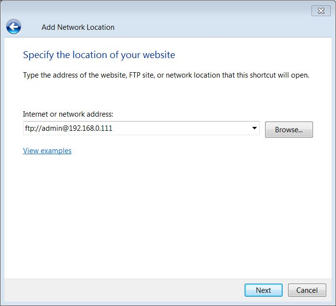
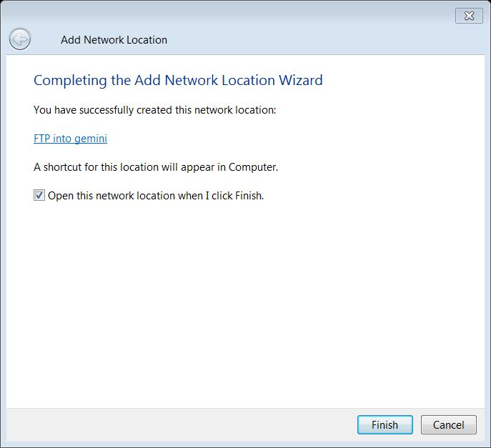
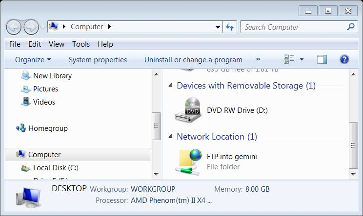
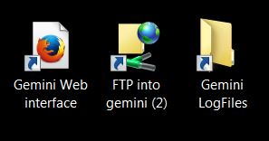

| Adding Gemini-2 to network places |
| We are going to add an FTP link into the Gemini-2 so that the Windows Explorer can see the contents of the micro-SDcard. This will work in both XP and Windows 7, but each is a little different. |
|
1. Open "Control Panel" via your start menu and double click on "Internet
Options" if using XP, or Network and Internet if using Win 7.
Now if using Win 7 click on internet options. For Win 7 a menu similar to this should open. |
|
 |
2. Click on the Advanced tab
in the left menu, and the menu on the right should open.
We need to make sure that certain options are selected.
|
| 3. Now if using XP, go to the start menu and select "My Network Places." If using Windows 7 then go to the start menu and select "Computer" Since I don't have XP, most of the demo will be for Win 7. If using Win 8.1, go to the start menu and select Windows Explorer. Right click on "This PC" and then on "Add a Network Location" in the pop-up box. |
|
4. If using XP, Click on add Network Place. A "Welcome to Add
network Place Wizard" should pop up. If using Windows 7 in
the Window that came up when you selected "Computer" in step 3 above, right mouse click on an empty spot. and select "add a network location" the wizard below should pop up. |
 |
| 5. Click on the Next button. |
 |
| 6. Highlight the "Specify the address of a wbesite, network location, or FTP site. then click on the Next button of this window. |
|  |
| 7. In the Internet or Network Address block put "FTP//:admin@YOUR GEMINI-2 IP ADDRESS" without the apostrophes. Then hit Next |
 |
| 8. A box will appear the will let you name the location so you can easily recognize it. I named mine FTP into Gemini. After naming it, hit Next. If a box comes up asking for a user name and password, put in admin for the user name and leave the password blank, but check the box to remember the password. This box comes up in Windows 8.1 |
|  |
| 9. This box lets you know that you have finished creating the shortcut. Hit Finish. If you have the checkbox Open the network connection when you hit finish, the it should open up a window into the micro-SDcard. |
 |
| 10. Below is an example of what my computer network location looks like after doing this. |
|  |
|
11. What is nice about this method, is that you can copy and past
the shortcut to your desktop. That way you will never have to type
FTP://admin@gemini again. See my
desktop example, so that I can easily copy and save the log files, the Pec files, and Config files. |
|  |
12. The left and right shortcuts was created by right clicking on the
desktop and putting it the proper location and title. The center
one is a copy of the shortcut from My Computer Network places. The other
two are optional icon that I find handy.
then when the name box comes up give it a name you like. This icon is optional. |
|
13. The other nice thing about this is that it makes updating the
firmware easy using Windows File Explorer,
See instructions here. All you have to do is copy the unzipped downloaded
firmware into this shortcut. It will replace any files already on
the micro-SDcard. Then go into the Firmware/SRAM tab of the web interface and select Flash Firmware. After that unplug and replug in the hand controller, and let it update. |